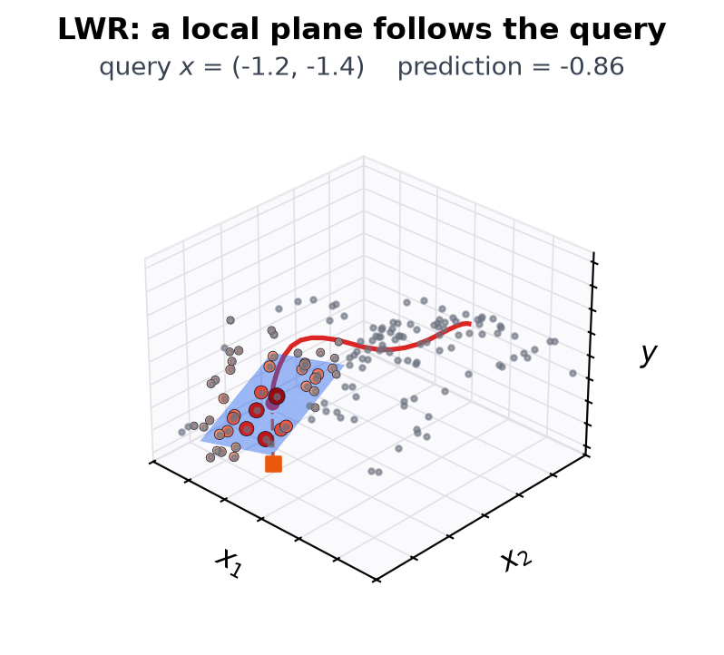
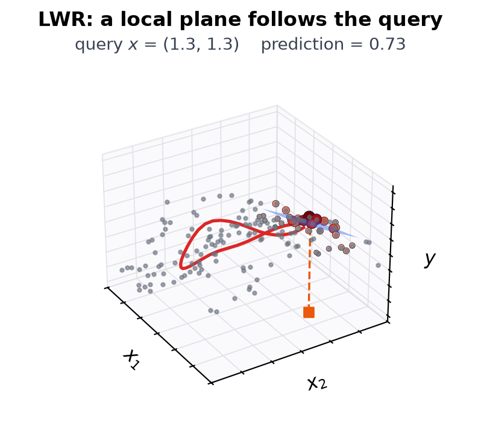
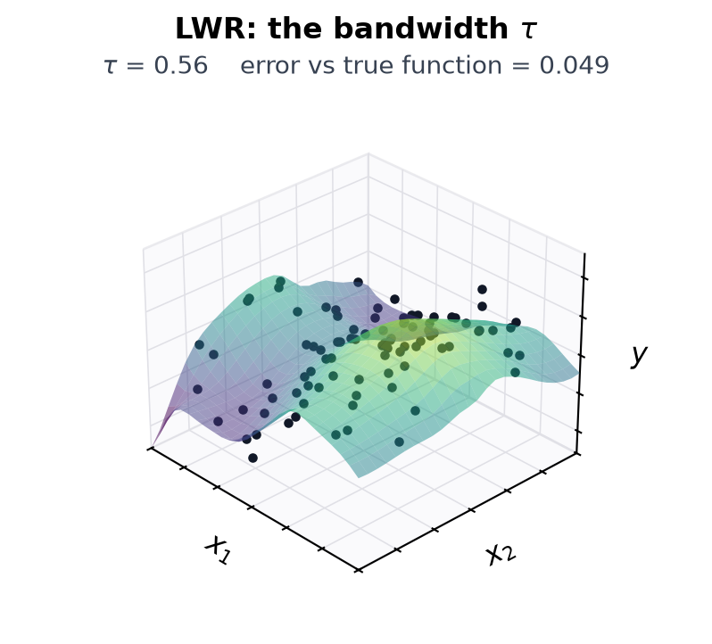
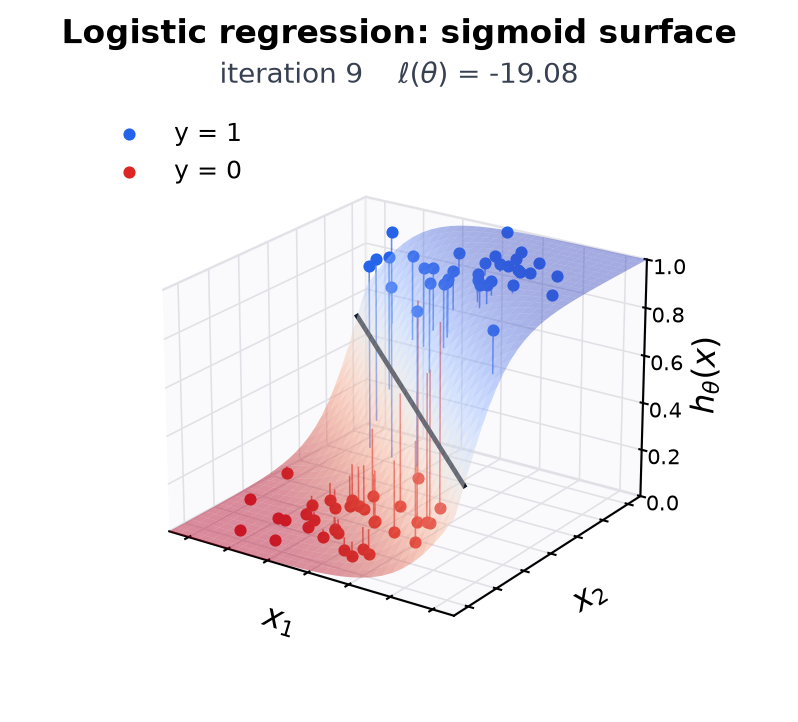
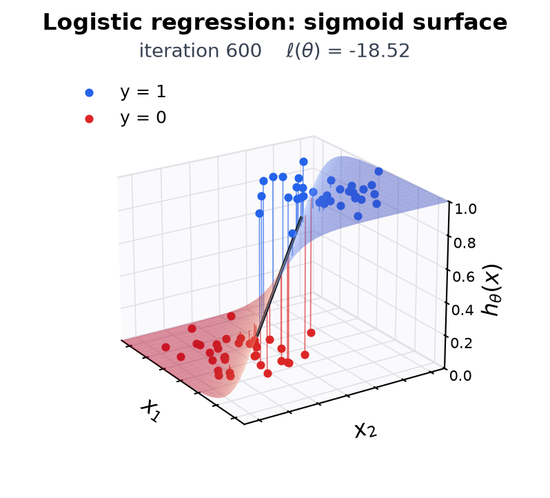
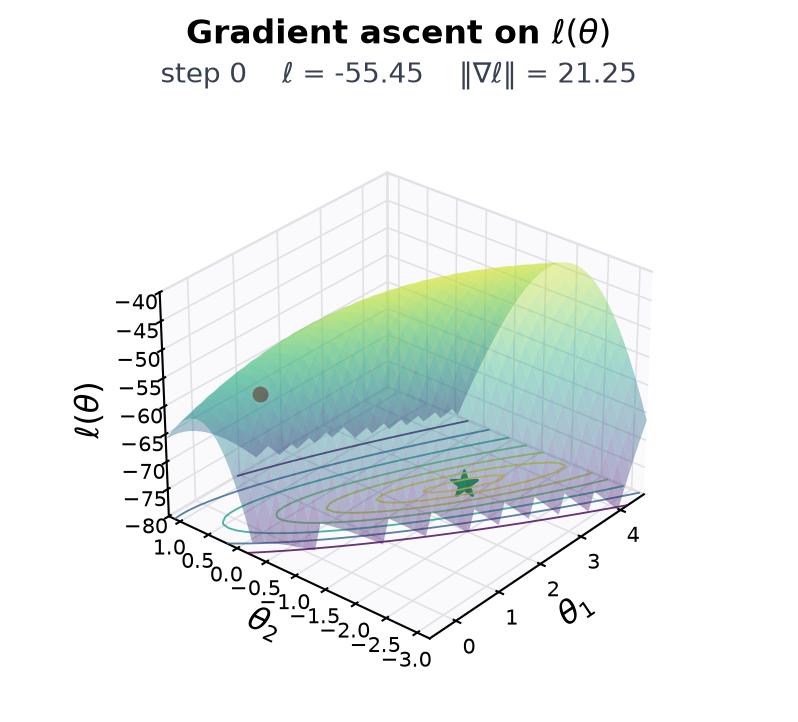
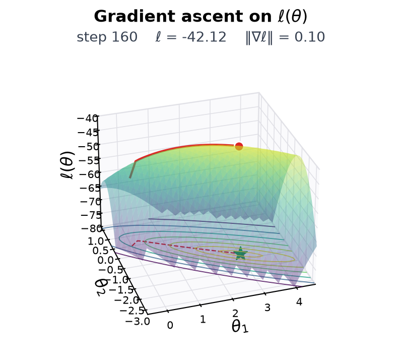
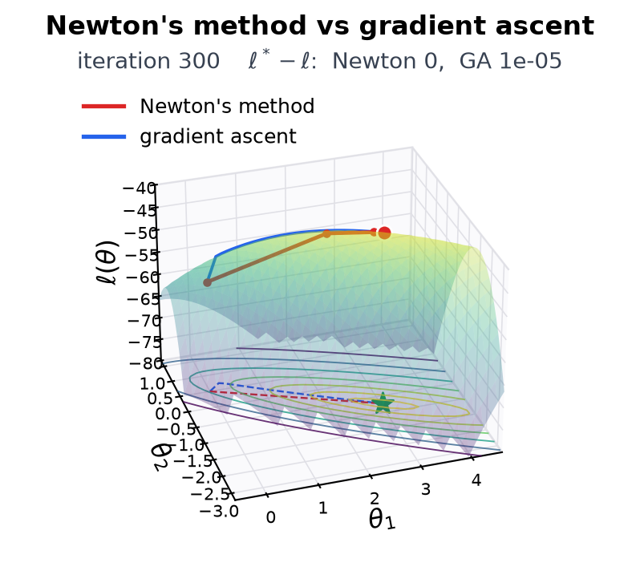
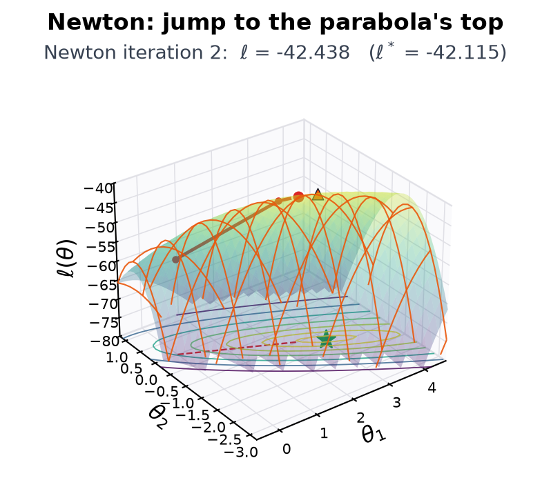

Weighted Least Squares, Logistic Regression और Newton's Method
Theory
इस lecture में: Weighted Least Squares, Locally Weighted Regression (weights, bandwidth \(\tau\), parametric बनाम non-parametric), Binary Classification के लिए Logistic Regression (sigmoid function, Bernoulli log-likelihood, Gradient Ascent, linear decision boundary), और तेज़ optimization के लिए Newton's Method (1D root finding, Hessian update, quadratic convergence, Fisher scoring)।
1. एक line में idea
Lecture 2 में हमने पूरे data पर एक सीधी रेखा या plane fit किया था। असल दुनिया की तीन स्थितियों में वह सीधा साँचा कम पड़ जाता है, और यही तीन स्थितियाँ इस lecture के तीन हिस्से हैं।
पहली स्थिति: target \(y\) और input \(x\) का रिश्ता मुड़ा हुआ (non-linear) है, पर आप हाथ से \(x^2, x^3, \sin x\) जैसे features गढ़ने के झंझट में नहीं पड़ना चाहते। Locally Weighted Regression (LWR) पूरे data पर एक रेखा खींचने के बजाय, जिस query point \(x\) पर जवाब चाहिए सिर्फ़ उसके आस-पास के पड़ोसियों को बड़ा weight देकर वहीं एक छोटा local linear fit बना लेता है।
दूसरी स्थिति: target \(y\) कोई continuous कीमत नहीं, बल्कि \(\{0, 1\}\) जैसा हाँ/ना का फ़ैसला है (binary classification)। Logistic Regression linear score \(\theta^T x\) को sigmoid function से गुज़ारकर \([0, 1]\) के बीच की probability बना देता है और Maximum Likelihood से \(\theta\) सीखता है।
तीसरी स्थिति: Gradient Ascent पहाड़ी की ढलान देखकर छोटे-छोटे कदमों से चढ़ता है और सैकड़ों iterations ले सकता है। Newton's Method ढलान के साथ-साथ पहाड़ी का मोड़ (Hessian / curvature) भी नापता है और महज़ 5 से 8 छलाँगों में चोटी पर पहुँच जाता है।
2. Weighted Least Squares और Locally Weighted Regression
साधारण Linear Regression में हर training example के error को बराबर महत्व मिलता है। मान लीजिए आपके पास हर example \(i\) के लिए एक non-negative weight \(w^{(i)} \ge 0\) है: जिसका weight बड़ा है उसकी बात ज़्यादा सुननी है, और जिसका weight \(0\) के पास है उसे लगभग नज़रअंदाज़ करना है। तब Weighted Least Squares (WLS) का cost function है:
\[J(\theta) = \frac{1}{2} \sum_{i=1}^{m} w^{(i)} \left( \theta^T x^{(i)} - y^{(i)} \right)^2\]
सारे weights को एक diagonal matrix \(W = \mathrm{diag}(w^{(1)}, \dots, w^{(m)})\) में रखें, तो यही cost साफ matrix रूप ले लेता है:
\[J(\theta) = \frac{1}{2} (X\theta - \vec{y})^T W (X\theta - \vec{y})\]
\(\theta\) के सापेक्ष gradient लेकर शून्य रखने पर \(\nabla_\theta J(\theta) = X^T W (X\theta - \vec{y}) = 0\) मिलता है। इससे Weighted Normal Equations निकलती हैं:
\[X^T W X \theta = X^T W \vec{y} \quad\Longrightarrow\quad \theta = (X^T W X)^{-1} X^T W \vec{y}\]
(Probabilistic नज़रिए से भी यह स्वाभाविक है: अगर हर example के Gaussian noise का variance अलग हो, \(\epsilon^{(i)} \sim \mathcal{N}(0, (\sigma^{(i)})^2)\), तो log-likelihood maximize करने से ठीक यही समस्या मिलती है जिसमें \(w^{(i)} = 1 / (\sigma^{(i)})^2\) होता है। यानी जिस बिंदु में शोर कम है, उसका weight बड़ा है।)
Locally Weighted Regression (LWR)
जब data मुड़ा हुआ हो, तो बहुत सरल features से underfitting होती है और बहुत ज़्यादा polynomial features से overfitting। LWR एक अलग रास्ता चुनता है। मान लीजिए किसी नए query point \(x\) पर आपको \(y\) का अंदाज़ा लगाना है। आप हर training example \(x^{(i)}\) को \(x\) से उसकी दूरी के हिसाब से weight देते हैं:
\[w^{(i)} = \exp\left( -\frac{\|x^{(i)} - x\|^2}{2\tau^2} \right)\]
और फिर ऊपर के \(J(\theta)\) को minimize करके उसी \(x\) के लिए अपना अलग \(\theta\) निकालते हैं, और prediction \(\theta^T x\) दे देते हैं।
इस weight formula के बारे में दो बातें गौर से समझें:
- यह दिखने में Gaussian bell curve जैसा ज़रूर है, पर इसका Gaussian probability distribution से कोई लेना-देना नहीं है। यहाँ \(w^{(i)}\) सिर्फ़ दूरी नापने वाला एक smooth kernel है: अगर \(\|x^{(i)} - x\|\) छोटा है तो \(w^{(i)} \approx 1\), और अगर \(x^{(i)}\) बहुत दूर है तो \(w^{(i)} \approx 0\)।
- Parameter \(\tau > 0\) को bandwidth (या wavelength parameter) कहते हैं। यही तय करता है कि "पड़ोस" कितना चौड़ा माना जाएगा:
- \(\tau\) बहुत छोटा: घंटी बहुत पतली होती है। सिर्फ़ दो-चार सबसे करीबी बिंदु काम आते हैं, और fitted curve हर छोटे-मोटे शोर के पीछे भागकर ऊबड़-खाबड़ हो जाती है (overfitting, high variance)।
- \(\tau\) बहुत बड़ा: घंटी इतनी चौड़ी हो जाती है कि लगभग हर बिंदु का \(w^{(i)} \approx 1\) रहता है। तब local पन खत्म हो जाता है और model वापस साधारण सीधी रेखा बन जाता है (underfitting, high bias)।
Parametric बनाम Non-parametric
| गुण | Parametric (जैसे Linear Regression) | Non-parametric (जैसे LWR) |
|---|---|---|
| मुख्य विचार | तय संख्या के parameters \(\theta\) में पूरा ज्ञान समेट लो | कोई एक स्थायी \(\theta\) मत बनाओ; query आने पर स्थानीय fit करो |
| Training के बाद | मूल data मिटाया जा सकता है, सिर्फ़ \(\theta\) काफ़ी है | पूरा training set \((X, \vec{y})\) हमेशा मेमोरी में रखना पड़ता है |
| एक नए \(x\) पर खर्च | बहुत सस्ता: सिर्फ़ \(\theta^T x\), यानी \(O(n)\) | महँगा: नया \(W\) बनाना और linear system हल करना |
| लचीलापन | तय साँचे तक सीमित | पर्याप्त data होने पर जटिल मुड़े हुए functions पकड़ लेता है |
"Non-parametric" का मतलब यह नहीं कि अंदर parameters हैं ही नहीं, बल्कि यह कि model को याद रखने के लिए ज़रूरी जानकारी की मात्रा data के आकार \(m\) के साथ बढ़ती जाती है।
3. Binary Classification और Logistic Regression
अब मान लीजिए target \(y \in \{0, 1\}\) है, जहाँ \(0\) को negative class और \(1\) को positive class कहते हैं (जैसे ट्यूमर benign है या malignant, email सामान्य है या spam)। इस पर सीधे Linear Regression क्यों नहीं चला देते? दो कारण हैं:
- \(\theta^T x\) की value \(-\infty\) से \(+\infty\) तक कुछ भी हो सकती है, जबकि \(y \in \{0, 1\}\) होने पर prediction को \([0, 1]\) में एक probability जैसा होना चाहिए।
- अगर एक तरफ़ बहुत दूर कोई बिल्कुल सही, आसान सा positive example आ जाए, तो squared error कम करने के चक्कर में सीधी रेखा झुक जाती है और बीच की decision boundary बिगड़ जाती है।
Logistic Regression में हम linear संयोजन \(\theta^T x\) (जहाँ हमेशा की तरह \(x_0 = 1\) है) को logistic या sigmoid function \(g(z)\) में डालते हैं:
\[h_\theta(x) = g(\theta^T x) = \frac{1}{1 + e^{-\theta^T x}}, \qquad g(z) = \frac{1}{1 + e^{-z}}\]
जब \(z \to +\infty\) तो \(g(z) \to 1\), जब \(z \to -\infty\) तो \(g(z) \to 0\), और ठीक बीच में \(g(0) = 0.5\)। साथ ही \(1 - g(z) = \frac{e^{-z}}{1 + e^{-z}} = g(-z)\)।
Sigmoid का derivative
आगे के सारे derivations की चाबी \(g'(z)\) का एक बेहद सुंदर गुण है:
\[\begin{aligned} g'(z) &= \frac{d}{dz} (1 + e^{-z})^{-1} = -(1 + e^{-z})^{-2}(-e^{-z}) = \frac{e^{-z}}{(1 + e^{-z})^2} \\ &= \frac{1}{1 + e^{-z}} \cdot \frac{e^{-z}}{1 + e^{-z}} = g(z)\bigl(1 - g(z)\bigr) \end{aligned}\]
Linear Decision Boundary
\(h_\theta(x)\) को हम \(x\) दिए होने पर \(y = 1\) की अनुमानित probability मानते हैं। जब ठोस \(0\) या \(1\) चुनना हो, तो स्वाभाविक नियम है कि \(h_\theta(x) \ge 0.5\) होने पर \(1\) बोलें, वरना \(0\)। चूँकि \(g(z)\) एक बढ़ता हुआ function है और \(g(0) = 0.5\) है:
\[h_\theta(x) \ge 0.5 \iff g(\theta^T x) \ge 0.5 \iff \theta^T x \ge 0\]
इसलिए दोनों classes को अलग करने वाली decision boundary समीकरण \(\theta^T x = 0\) से तय होती है। मूल features \(x_1, \dots, x_n\) के space में यह एक सीधा hyperplane है (दो features में एक सीधी रेखा)। ध्यान रहे: \(h_\theta(x)\) की ऊँचाई एक मुड़ी हुई S-आकार की चादर है, पर जहाँ वह \(0.5\) को काटती है वह सीमा बिल्कुल linear है।
4. Bernoulli Log-Likelihood और Gradient Ascent
Parameters \(\theta\) कैसे सीखें? हम Lecture 2 की तरह probabilistic रास्ता अपनाते हैं:
\[P(y = 1 \mid x; \theta) = h_\theta(x), \qquad P(y = 0 \mid x; \theta) = 1 - h_\theta(x)\]
चूँकि \(y\) सिर्फ़ \(0\) या \(1\) हो सकता है, इन दोनों समीकरणों को एक अकेले Bernoulli रूप में लिखा जा सकता है:
\[p(y \mid x; \theta) = \bigl(h_\theta(x)\bigr)^y \bigl(1 - h_\theta(x)\bigr)^{1 - y}\]
(खुद रखकर देख लें: \(y = 1\) पर दूसरा गुणनखंड \(1\) हो जाता है और \(h_\theta(x)\) बचता है; \(y = 0\) पर पहला गुणनखंड \(1\) हो जाता है और \(1 - h_\theta(x)\) बचता है।)
मान लीजिए सारे \(m\) training examples स्वतंत्र रूप से जनित हैं। पूरे data का likelihood \(L(\theta) = \prod_{i=1}^{m} p(y^{(i)} \mid x^{(i)}; \theta)\) है। गुणनफल को जोड़ में बदलने के लिए log लें, तो log-likelihood मिलता है:
\[\ell(\theta) = \log L(\theta) = \sum_{i=1}^{m} \Bigl[ y^{(i)} \log h_\theta(x^{(i)}) + (1 - y^{(i)}) \log\bigl(1 - h_\theta(x^{(i)})\bigr) \Bigr]\]
Gradient का पूरा derivation
पहले सिर्फ़ एक training example \((x, y)\) का अंश लेते हैं। संक्षेप में \(z = \theta^T x\) और \(h = g(z)\) लिखें। तब \(\frac{\partial z}{\partial \theta_j} = x_j\), और chain rule से \(\frac{\partial h}{\partial \theta_j} = g'(z) x_j = h(1 - h) x_j\)। अब \(\theta_j\) के सापेक्ष partial derivative निकालें:
\[\begin{aligned} \frac{\partial}{\partial \theta_j} \bigl[ y \log h + (1 - y)\log(1 - h) \bigr] &= \left( \frac{y}{h} - \frac{1 - y}{1 - h} \right) \frac{\partial h}{\partial \theta_j} \\ &= \frac{y(1 - h) - (1 - y)h}{h(1 - h)} \cdot h(1 - h)\, x_j \\ &= (y - yh - h + yh)\, x_j = \bigl(y - h_\theta(x)\bigr) x_j \end{aligned}\]
\(h(1 - h)\) का हर और अंश में आपस में कट जाना ही वह वजह है जिससे अंतिम उत्तर इतना साफ़ आता है! सारे \(m\) examples पर जोड़ने से पूरा gradient मिलता है:
\[\frac{\partial \ell(\theta)}{\partial \theta_j} = \sum_{i=1}^{m} \bigl(y^{(i)} - h_\theta(x^{(i)})\bigr) x_j^{(i)}, \qquad \nabla_\theta \ell(\theta) = X^T (\vec{y} - \vec{h})\]
जहाँ \(\vec{h} = g(X\theta)\) सारे examples की predicted probabilities का vector है।
Gradient Ascent और LMS से तुलना
यहाँ हमें cost घटाना नहीं, बल्कि log-likelihood \(\ell(\theta)\) को maximize करना है। इसलिए हम gradient की दिशा में ऊपर चढ़ते हैं (Gradient Ascent, बीच में \(+\) का निशान देखें):
\[\theta := \theta + \alpha \nabla_\theta \ell(\theta), \qquad \text{एक example के लिए: } \theta_j := \theta_j + \alpha \bigl(y^{(i)} - h_\theta(x^{(i)})\bigr) x_j^{(i)}\]
ठहरकर इस सूत्र को Lecture 2 के LMS update rule से मिलाइए: अक्षर-अक्षर बिल्कुल एक जैसा दिखता है! पर यह वही algorithm नहीं है, क्योंकि वहाँ \(h_\theta(x) = \theta^T x\) एक रैखिक सूत्र था और यहाँ \(h_\theta(x) = \frac{1}{1 + e^{-\theta^T x}}\) एक non-linear sigmoid है। फिर भी सूत्र का रूप हूबहू वैसा ही निकलना महज़ संयोग नहीं है; अगले lecture में जब हम Generalized Linear Models (GLMs) पढ़ेंगे, तब इसका गहरा राज़ खुलेगा।
Linear Regression की तरह यहाँ \(\nabla_\theta \ell(\theta) = 0\) को कागज़ पर सीधे हल करने का कोई closed-form सूत्र नहीं है, इसलिए iterative optimization ज़रूरी है। अच्छी खबर यह है कि \(\ell(\theta)\) एक concave पहाड़ी है: इसमें कोई नकली चोटी (local maximum) नहीं होती।
5. Newton's Method
Gradient Ascent हर कदम पर सिर्फ़ स्थानीय ढलान देखता है, इसलिए लंबी-पतली पहाड़ी पर उसे छोटे कदमों से सैकड़ों बार रेंगना पड़ता है। Newton's Method (Newton-Raphson) कहीं बड़े और सटीक कदम उठाने की कला है।
1D में root finding से optimization तक
मान लीजिए एक एकल चर वाला function \(f(\theta) : \mathbb{R} \to \mathbb{R}\) दिया है और हमें वह जड़ (root) ढूँढनी है जहाँ \(f(\theta) = 0\) हो। यदि हम अभी \(\theta^{(t)}\) पर खड़े हैं, तो उस बिंदु पर \(f\) की स्पर्श रेखा (tangent line) का समीकरण है:
\[f(\theta) \approx f(\theta^{(t)}) + f'(\theta^{(t)})(\theta - \theta^{(t)})\]
Newton का सरल विचार यह है कि यह सीधी रेखा जहाँ क्षैतिज अक्ष (\(0\)) को काटती है, वही हमारा अगला अनुमान \(\theta^{(t+1)}\) होगा। ऊपर दाईं तरफ़ को \(0\) के बराबर रखकर हल करें:
\[f(\theta^{(t)}) + f'(\theta^{(t)})(\theta^{(t+1)} - \theta^{(t)}) = 0 \quad\Longrightarrow\quad \theta^{(t+1)} = \theta^{(t)} - \frac{f(\theta^{(t)})}{f'(\theta^{(t)})}\]
अब सोचिए: हमें root नहीं, बल्कि \(\ell(\theta)\) का maximum चाहिए! पर किसी smooth पहाड़ी की चोटी पर उसका पहला derivative शून्य होता है, यानी हमें \(\ell'(\theta) = 0\) हल करना है। बस \(f(\theta) = \ell'(\theta)\) रख दीजिए। तब \(f'(\theta) = \ell''(\theta)\) बन जाता है और optimization का Newton step मिल जाता है:
\[\theta^{(t+1)} = \theta^{(t)} - \frac{\ell'(\theta^{(t)})}{\ell''(\theta^{(t)})}\]
Geometric मतलब: बिंदु \(\theta^{(t)}\) के पास \(\ell(\theta)\) का second-order Taylor विस्तार एक parabola (उल्टा कटोरा) बनाता है जिसकी ऊँचाई \(\ell\), ढलान \(\ell'\) और मोड़ \(\ell''\) तीनों असली curve से मिलते हैं। ऊपर लिखा सूत्र ठीक उसी स्थानीय parabola की चोटी पर सीधे छलाँग लगा देता है।
Multidimensional रूप: Hessian Update
जब \(\theta \in \mathbb{R}^{n+1}\) एक vector हो, तो पहले derivative की जगह gradient vector \(\nabla_\theta \ell(\theta)\) लेता है और दूसरे derivative की जगह Hessian matrix \(H \in \mathbb{R}^{(n+1) \times (n+1)}\), जिसकी \((j, k)\)-वीं प्रविष्टि है:
\[H_{jk} = \frac{\partial^2 \ell(\theta)}{\partial \theta_j \, \partial \theta_k}\]
तब बहु-आयामी Newton's Method का update नियम है:
\[\theta^{(t+1)} = \theta^{(t)} - H^{-1} \nabla_\theta \ell(\theta^{(t)})\]
ध्यान दें कि इसमें कोई learning rate \(\alpha\) नहीं है; Hessian खुद हर दिशा के मोड़ के हिसाब से कदम की लंबाई और दिशा दोनों तय कर लेता है।
Logistic Regression का Hessian और Concavity
Logistic Regression के लिए \(\frac{\partial \ell}{\partial \theta_j} = \sum_{i=1}^{m} (y^{(i)} - h^{(i)}) x_j^{(i)}\), जहाँ \(h^{(i)} = h_\theta(x^{(i)})\)। इसका \(\theta_k\) के सापेक्ष दोबारा derivative लें (\(y^{(i)}\) अचर है, इसलिए उसका अवकलन शून्य हो जाता है):
\[H_{jk} = -\sum_{i=1}^{m} \frac{\partial h^{(i)}}{\partial \theta_k} x_j^{(i)} = -\sum_{i=1}^{m} h^{(i)}(1 - h^{(i)}) x_j^{(i)} x_k^{(i)}\]
यदि हम \(D = \mathrm{diag}\bigl(h^{(1)}(1 - h^{(1)}), \dots, h^{(m)}(1 - h^{(m)})\bigr)\) लिखें, तो पूरा Hessian संक्षेप में यह है:
\[H = -\sum_{i=1}^{m} h^{(i)}(1 - h^{(i)}) x^{(i)} x^{(i)T} = -X^T D X\]
किसी भी शून्येतर vector \(z\) के लिए \(z^T H z = -\sum_{i=1}^{m} h^{(i)}(1 - h^{(i)}) (z^T x^{(i)})^2 \le 0\), क्योंकि \(h^{(i)} \in (0, 1)\) होने से \(h^{(i)}(1 - h^{(i)}) > 0\) है और वर्ग कभी ऋणात्मक नहीं होता। अतः \(H\) हमेशा negative semi-definite है। यही गणितीय प्रमाण है कि Logistic Regression का \(\ell(\theta)\) हर जगह concave है और उसका कोई छलावा देने वाला local maximum नहीं हो सकता।
6. Quadratic Convergence, Fisher Scoring और पूरा Algorithm
Quadratic Convergence बनाम प्रति-iteration खर्च
जब \(\theta\) असली शिखर \(\theta^*\) के करीब आ जाता है, तो Newton's Method quadratic convergence दिखाता है: अगले कदम की त्रुटि पिछली त्रुटि के वर्ग के अनुपात में गिरती है, यानी \(\|\theta^{(t+1)} - \theta^*\| \le C \|\theta^{(t)} - \theta^*\|^2\)। व्यावहारिक भाषा में इसका मतलब है कि हर एक iteration में सही दशमलव अंकों की संख्या लगभग दोगुनी हो जाती है (जैसे त्रुटि \(10^{-2} \to 10^{-4} \to 10^{-8} \to 10^{-16}\))। अक्सर 5 से 8 iterations में ही काम पूरा हो जाता है।
पर एक iteration मुफ्त नहीं आता: \((n+1) \times (n+1)\) का Hessian बनाने में \(O(mn^2)\) और linear system हल करने में \(O(n^3)\) समय लगता है।
| तुलना | Batch Gradient Ascent | Newton's Method |
|---|---|---|
| Learning rate \(\alpha\) | हाथ से चुनना और tune करना पड़ता है | कोई \(\alpha\) नहीं चाहिए (स्वाभाविक step size \(1\)) |
| आवश्यक iterations | अक्सर सैकड़ों या हज़ारों | बहुत कम (आम तौर पर \(5\) से \(10\)) |
| एक iteration का खर्च | \(O(mn)\), बहुत हल्का | \(O(mn^2 + n^3)\), Hessian बनाना व हल करना |
| कब चुनें | जब features \(n\) हज़ारों-लाखों में हों | जब \(n\) छोटा या मध्यम हो (कुछ सौ तक) |
Fisher Scoring और IRLS से रिश्ता
सामान्य प्रायिकता मॉडलों में Hessian \(H\) के भीतर यादृच्छिक लक्ष्य \(y\) भी मौजूद रहता है, जिससे शिखर से दूर \(H\) कभी-कभी गलत दिशा में मुड़ सकता है। Fisher Scoring इस कठिनाई से बचने के लिए \(-H\) की जगह उसका अपेक्षित मान (expectation) रखता है, जिसे Fisher Information Matrix \(\mathcal{I}(\theta)\) कहते हैं:
\[\mathcal{I}(\theta) = \mathbb{E}_{y \mid x; \theta}\bigl[ -\nabla_\theta^2 \ell(\theta) \bigr], \qquad \theta^{(t+1)} = \theta^{(t)} + \mathcal{I}(\theta^{(t)})^{-1} \nabla_\theta \ell(\theta^{(t)})\]
अब ऊपर निकले Logistic Regression के सूत्र \(H = -X^T D X\) को फिर से देखिए: उसमें \(y^{(i)}\) कहीं है ही नहीं! इसलिए expectation लेने पर कुछ नहीं बदलता और \(\mathcal{I}(\theta) = -H = X^T D X\) ही आता है। अर्थात Logistic Regression के लिए Newton's Method और Fisher Scoring बिल्कुल एक ही algorithm हैं।
इतना ही नहीं, यदि हम Newton step को खोलकर लिखें और एक कामचलाऊ लक्ष्य \(\vec{z} = X\theta^{(t)} + D^{-1}(\vec{y} - \vec{h})\) परिभाषित करें, तो:
\[\theta^{(t+1)} = \theta^{(t)} + (X^T D X)^{-1} X^T (\vec{y} - \vec{h}) = (X^T D X)^{-1} X^T D \vec{z}\]
यह तो हूबहू Section 2 की Weighted Normal Equation है, बस हर iteration पर weights \(D_{ii} = h^{(i)}(1 - h^{(i)})\) बदल रहे हैं! इसी कारण Logistic Regression पर लगाए गए Newton's Method को IRLS (Iteratively Reweighted Least Squares) भी कहा जाता है। जिन बिंदुओं पर model अनिश्चित है (\(h^{(i)} \approx 0.5\)), उनका weight \(h^{(i)}(1 - h^{(i)}) \approx 0.25\) सबसे बड़ा रहता है; जिन पर वह पूरी तरह आश्वस्त है (\(h^{(i)} \approx 0\) या \(1\)), उनका weight लगभग शून्य हो जाता है।
Algorithm: Newton's Method से Logistic Regression (step by step)
- Design matrix \(X \in \mathbb{R}^{m \times (n+1)}\) में पहला स्तंभ \(x_0 = 1\) रखें और \(\theta^{(0)} = \vec{0}\) से शुरुआत करें।
- Iteration \(t = 0, 1, 2, \dots\) के लिए: - Linear scores \(\vec{\eta} = X\theta^{(t)}\) और probabilities \(\vec{h} = g(\vec{\eta}) = \frac{1}{1 + e^{-\vec{\eta}}}\) निकालें। - Gradient \(g_{\text{vec}} = X^T(\vec{y} - \vec{h})\) निकालें। - प्रति-उदाहरण weights \(d_i = h_i(1 - h_i)\) निकालें और धनात्मक सममित आव्यूह \(A = X^T D X\) बनाएँ। - Linear system \(A \Delta = g_{\text{vec}}\) हल करें और \(\theta^{(t+1)} := \theta^{(t)} + \Delta\) रखें।
- जब \(\|\Delta\|_2 < 10^{-8}\) हो जाए, रुक जाएँ।
7. Practical बातें और आम गलतियाँ
- Complete separation का खतरा: अगर दोनों classes के बिंदु इतने साफ़ बँटे हों कि कोई रेखा उन्हें बिना एक भी गलती के अलग कर दे, तो \(\ell(\theta)\) को \(0\) के और पास ले जाने के लिए \(\|\theta\| \to \infty\) भागता है। तब \(h^{(i)}(1 - h^{(i)}) \to 0\) होने से \(X^T D X\) singular हो जाता है और Newton step फट जाता है। इसका मानक इलाज L2 regularization (\(-\frac{\lambda}{2}\sum_{j=1}^n \theta_j^2\)) है, जो \(X^T D X\) में \(\lambda I\) जोड़कर उसे हमेशा invertible रखता है।
- \(\log(0)\) और
expके overflow से बचें: code में सीधेy * np.log(h) + (1 - y) * np.log(1 - h)लिखने पर \(h = 1.0\) होते हीnanआ जाता है। बीजगणित से वही व्यंजक \(y z - \log(1 + e^z)\) के बराबर है, जिसे NumPy मेंy * z - np.logaddexp(0, z)से पूरी सुरक्षा के साथ निकाला जाता है। - कभी
inv(H)न लिखें: matrix का explicit inverse निकालना धीमा भी है और rounding त्रुटि भी बढ़ाता है। हमेशाnp.linalg.solve(A, g_vec)से सीधे समीकरण हल करें। - LWR में scaling और \(\tau\) का चुनाव: दूरी \(\|x^{(i)} - x\|^2\) सभी features को एक ही तराज़ू पर तौलती है। यदि एक feature किलोमीटर में है और दूसरा मिलीमीटर में, तो दूसरा बेअसर हो जाएगा। पहले features को normalize करें, और \(\tau\) को हमेशा अलग रखे validation set पर चुनें।
8. खुद से पूछें
- Locally Weighted Regression में यदि आप bandwidth \(\tau \to \infty\) ले जाएँ, तो सारे weights \(w^{(i)}\) किस संख्या की ओर जाते हैं, और तब हर query \(x\) के लिए मिलने वाला model किस जाने-पहचाने model में बदल जाता है?
- Logistic Regression में हम Linear Regression की नकल करके \(\frac{1}{2}\sum_{i=1}^m \bigl(g(\theta^T x^{(i)}) - y^{(i)}\bigr)^2\) को ही क्यों नहीं minimize कर लेते? (संकेत: क्या यह cost function convex रहेगा?)
- अगर किसी dataset के दूसरे feature को \(100\) से गुणा कर दिया जाए (जैसे मीटर को सेंटीमीटर बना दें), तो Gradient Ascent की रफ़्तार पर क्या असर पड़ेगा, और बिना किसी बदलाव के Newton's Method के iterations की संख्या पर क्या असर पड़ेगा?
3D Animations



क्या देखें: ज़मीन पर दो features \(x_1, x_2\) हैं और ऊँचाई पर target \(y\)। Data एक मुड़ी हुई surface से आया है, जिसे कोई एक plane fit नहीं कर सकता। नारंगी चौकोर query point \(x\) है। हर frame में Locally Weighted Regression सिर्फ़ उसी \(x\) के लिए एक नया plane fit करता है (नीला टुकड़ा), जिसमें पास के बिंदुओं का weight \(w^{(i)}\) बड़ा है (बड़े, गहरे लाल बिंदु) और दूर के बिंदुओं का लगभग zero। Query के साथ-साथ plane भी झुकता और घूमता है, और लाल रेखा उसके predictions का निशान है: सीधे टुकड़ों से एक मुड़ा हुआ fit बन जाता है। कीमत यह है कि हर नए \(x\) पर fit दोबारा करना पड़ता है।



क्या देखें: वही Locally Weighted Regression, पर अब हर grid point को query मानकर पूरी fitted surface बनाई गई है, और bandwidth \(\tau\) बड़े से छोटा होता जा रहा है। \(\tau\) बड़ा हो तो हर बिंदु का weight लगभग बराबर है और surface लगभग एक plane रह जाती है (underfitting)। बीच के \(\tau\) पर surface data का मोड़ पकड़ लेती है और सच्चे function से error सबसे छोटा होता है। \(\tau\) बहुत छोटा हो तो हर prediction सिर्फ़ दो-चार पड़ोसियों पर टिका होता है, surface noise के पीछे भागकर ऊबड़-खाबड़ हो जाती है और error फिर बढ़ जाता है (overfitting)।



क्या देखें: ज़मीन पर features \(x_1, x_2\) हैं और ऊँचाई एक probability है। हर बिंदु अपने label की ऊँचाई पर रखा है: लाल बिंदु \(y = 0\) पर, नीले \(y = 1\) पर। Surface \(h_\theta(x) = g(\theta^T x)\) है, यानी model के हिसाब से \(y = 1\) होने की probability। \(\theta = 0\) पर surface हर जगह \(0.5\) है। Gradient ascent के साथ वह एक तरफ़ \(1\) की ओर उठती है और दूसरी तरफ़ \(0\) की ओर गिरती है, और पतली रेखाएँ (errors \(y^{(i)} - h_\theta(x^{(i)})\)) छोटी होती जाती हैं। काली रेखा, जहाँ \(h_\theta(x) = 0.5\) है, decision boundary है: sigmoid मुड़ा हुआ है, पर boundary सीधी है।



क्या देखें: अब parameter space देखिए: ज़मीन पर \(\theta_1, \theta_2\) और ऊँचाई पर log-likelihood \(\ell(\theta)\)। Linear Regression का \(J\) एक कटोरा था जिसकी तली ढूँढनी थी। यहाँ \(\ell\) एक concave पहाड़ी है जिसकी चोटी (हरा तारा, maximum likelihood) ढूँढनी है, इसलिए update में plus का निशान है: \(\theta := \theta + \alpha \nabla_\theta \ell(\theta)\)। लाल गेंद \(\theta = 0\) से चलती है। पहले कुछ कदमों में वह तेज़ चढ़ाई चढ़कर पहाड़ी की लंबी पीठ (ridge) पर पहुँच जाती है, फिर पीठ के साथ-साथ बहुत धीरे चोटी की ओर खिसकती है, क्योंकि वहाँ gradient छोटा है। पहाड़ी concave है, इसलिए कोई दूसरी चोटी नहीं है जहाँ वह अटक जाए।



क्या देखें: उसी पहाड़ी पर, उसी जगह से दो तरीके साथ-साथ चल रहे हैं, और दोनों के लिए गिनती एक ही है: एक iteration। नीला gradient ascent है, जो सिर्फ़ ढलान देखता है। लाल Newton's method है, जो Hessian से surface का मोड़ (curvature) भी देखता है: \(\theta := \theta - H^{-1} \nabla_\theta \ell\)। Newton तीन-चार छलाँगों में चोटी पर है, और status line में उसका बचा हुआ फ़ासला \(\ell^* - \ell\) हर iteration में लगभग square होता जाता है (quadratic convergence)। Gradient ascent को वही दूरी तय करने में सैकड़ों iterations लगते हैं। ध्यान रहे कि Newton का एक iteration महँगा है, क्योंकि उसमें \(H\) बनाकर एक linear system हल करना पड़ता है।



क्या देखें: Newton's method इतना तेज़ क्यों है? हर iteration में वह वर्तमान \(\theta\) (लाल गेंद) पर \(\ell\) की ऊँचाई, gradient और Hessian तीनों मिलाकर एक quadratic surface (नारंगी जाली) बनाता है जो उस जगह असली पहाड़ी से चिपकी होती है। Quadratic की चोटी सीधे formula से मिल जाती है, और वह ठीक \(\theta - H^{-1} \nabla_\theta \ell\) पर है, इसलिए गेंद सीधे वहीं कूद जाती है। पहली जाली असली पहाड़ी से काफ़ी अलग है, पर चोटी के पास आते-आते जाली और पहाड़ी लगभग एक हो जाती हैं। इसीलिए आखिरी छलाँगें लगभग बिल्कुल सही पड़ती हैं।
Python Example
इसे खुद चलाएँ: cs229_hindi/.venv/bin/python cs229_hindi/chapters/L03_logistic_newton/example.py
"""Lecture 3 example: Logistic Regression (Gradient Ascent बनाम Newton) और LWR (सिर्फ़ NumPy). भाग 1: दो exam scores से admission (0/1) का prediction। एक ही data पर Batch Gradient Ascent और Newton's Method (Fisher Scoring / IRLS) चलाकर हर iteration पर log-likelihood देखते हैं। भाग 2: एक मुड़े हुए 1D function पर Locally Weighted Regression (LWR) और bandwidth tau का असर। """ import numpy as np import matplotlib.pyplot as plt rng = np.random.default_rng(7) def sigmoid(z): return np.where(z >= 0, 1.0 / (1.0 + np.exp(-z)), np.exp(z) / (1.0 + np.exp(z))) def log_likelihood(theta, X, y): """Overflow-safe Bernoulli log-likelihood: sum(y*z - log(1 + exp(z))).""" z = X @ theta return float(np.sum(y * z - np.logaddexp(0.0, z))) # ==================== 1. Logistic Regression: Data और Setup ==================== m = 200 s1 = rng.normal(65, 12, m) # exam 1 score s2 = 0.85 * s1 + rng.normal(12, 5.5, m) # exam 2 (मज़बूत correlation -> तंग ridge) logits_true = -13.5 + 0.11 * s1 + 0.10 * s2 y_all = (rng.uniform(size=m) < sigmoid(logits_true)).astype(float) idx = rng.permutation(m) tr, te = idx[:160], idx[160:] feats = np.c_[s1, s2] mu, sd = feats[tr].mean(axis=0), feats[tr].std(axis=0) X_tr = np.c_[np.ones(len(tr)), (feats[tr] - mu) / sd] X_te = np.c_[np.ones(len(te)), (feats[te] - mu) / sd] y_tr, y_te = y_all[tr], y_all[te] def gradient_ascent(X, y, alpha=0.005, iters=200): theta = np.zeros(X.shape[1]) hist = [log_likelihood(theta, X, y)] for _ in range(iters): theta = theta + alpha * (X.T @ (y - sigmoid(X @ theta))) hist.append(log_likelihood(theta, X, y)) return theta, np.array(hist) def newtons_method(X, y, iters=7): theta = np.zeros(X.shape[1]) hist = [log_likelihood(theta, X, y)] for _ in range(iters): h = sigmoid(X @ theta) grad = X.T @ (y - h) d = h * (1.0 - h) # Fisher / IRLS diagonal weights neg_H = X.T @ (d[:, None] * X) # -H = X^T D X (positive definite) theta = theta + np.linalg.solve(neg_H, grad) hist.append(log_likelihood(theta, X, y)) return theta, np.array(hist) th_ga, ll_ga = gradient_ascent(X_tr, y_tr) th_nt, ll_nt = newtons_method(X_tr, y_tr) ll_star = ll_nt[-1] print("=== Logistic Regression: Newton's Method (प्रति iteration) ===") print("iter log-likelihood gap (l* - l)") for k, val in enumerate(ll_nt): print(f"{k:4d} {val:14.8f} {max(ll_star - val, 0.0):12.2e}") print("\n=== Logistic Regression: Gradient Ascent (चुनिंदा iterations) ===") print("iter log-likelihood gap (l* - l)") for k in (0, 1, 2, 5, 15, 50, 100, 200): print(f"{k:4d} {ll_ga[k]:14.8f} {max(ll_star - ll_ga[k], 0.0):12.2e}") acc_tr = np.mean((sigmoid(X_tr @ th_nt) >= 0.5) == y_tr) * 100 acc_te = np.mean((sigmoid(X_te @ th_nt) >= 0.5) == y_te) * 100 print(f"\nNewton theta : { np.round(th_nt, 5) }") print(f"Ascent theta : { np.round(th_ga, 5) }") print(f"Accuracy : train = {acc_tr:.1f}%, test = {acc_te:.1f}%") # ==================== 2. Locally Weighted Regression (LWR) ==================== def f_true(x): return np.sin(1.4 * x) + 0.35 * np.cos(3.7 * x) x_lwr = np.sort(rng.uniform(-3.0, 3.0, 65)) y_lwr = f_true(x_lwr) + rng.normal(0.0, 0.26, len(x_lwr)) x_grid = np.linspace(-2.85, 2.85, 160) def lwr_predict(x_train, y_train, queries, tau): """हर query x के लिए (X^T W X) theta = X^T W y हल करें।""" X_des = np.c_[np.ones_like(x_train), x_train] preds = np.empty_like(queries) for idx_q, q in enumerate(queries): w = np.exp(-((x_train - q) ** 2) / (2.0 * tau ** 2)) A = X_des.T @ (w[:, None] * X_des) + 1e-10 * np.eye(2) b = X_des.T @ (w * y_train) th_local = np.linalg.solve(A, b) preds[idx_q] = th_local[0] + th_local[1] * q return preds print("\n=== Locally Weighted Regression: अलग-अलग bandwidth tau पर MSE ===") fits = {} for tau, tag in [(3.0, "underfit (लगभग सीधी रेखा)"), (0.8, "थोड़ा smooth"), (0.28, "संतुलित local fit"), (0.06, "overfit (शोर के पीछे)")]: fits[tau] = lwr_predict(x_lwr, y_lwr, x_grid, tau) mse = np.mean((fits[tau] - f_true(x_grid)) ** 2) print(f" tau = {tau:<5} MSE vs true curve = {mse:.4f} [{tag}]") # ==================== 3. Plots ==================== fig, axes = plt.subplots(1, 3, figsize=(12.2, 3.8)) axes[0].semilogy(np.maximum(ll_star - ll_ga, 1e-15), color="#2563eb", lw=1.8, label="Gradient Ascent") axes[0].semilogy(np.maximum(ll_star - ll_nt, 1e-15), "o-", color="#dc2626", lw=1.8, ms=4.5, label="Newton's Method") axes[0].set(xlabel="iteration", ylabel=r"$\ell(\theta^*) - \ell(\theta)$", title="Convergence to MLE") axes[0].legend() ax1 = axes[1] ax1.scatter(X_tr[y_tr == 0, 1], X_tr[y_tr == 0, 2], s=18, c="#dc2626", alpha=0.75, label="y = 0") ax1.scatter(X_tr[y_tr == 1, 1], X_tr[y_tr == 1, 2], s=18, c="#2563eb", alpha=0.75, label="y = 1") xs = np.linspace(-2.4, 2.4, 100) ax1.plot(xs, -(th_nt[0] + th_nt[1] * xs) / th_nt[2], "k-", lw=1.8, label="h = 0.5 boundary") ax1.set(xlim=(-2.5, 2.5), ylim=(-2.5, 2.5), xlabel="scaled exam 1", ylabel="scaled exam 2", title="Logistic Decision Boundary") ax1.legend(loc="lower left", fontsize=8.5) ax2 = axes[2] ax2.scatter(x_lwr, y_lwr, s=14, color="#6b7280", alpha=0.65, label="noisy data") ax2.plot(x_grid, f_true(x_grid), "k--", lw=1.2, label="true curve") for tau, col in [(3.0, "#2563eb"), (0.28, "#16a34a"), (0.06, "#ea580c")]: ax2.plot(x_grid, fits[tau], color=col, lw=1.7, label=rf"$\tau = {tau}$") ax2.set(ylim=(-2.0, 2.0), xlabel="x", ylabel="y", title=r"LWR across bandwidth $\tau$") ax2.legend(loc="lower left", fontsize=8.2) fig.tight_layout() fig.savefig("result.png", dpi=130)
=== Logistic Regression: Newton's Method (प्रति iteration) === iter log-likelihood gap (l* - l) 0 -110.90354889 4.40e+01 1 -72.21574790 5.34e+00 2 -67.38766866 5.15e-01 3 -66.88222580 9.18e-03 4 -66.87304609 3.90e-06 5 -66.87304219 7.39e-13 6 -66.87304219 1.42e-14 7 -66.87304219 0.00e+00 === Logistic Regression: Gradient Ascent (चुनिंदा iterations) === iter log-likelihood gap (l* - l) 0 -110.90354889 4.40e+01 1 -90.24511212 2.34e+01 2 -81.29152650 1.44e+01 5 -72.07713226 5.20e+00 15 -67.48091338 6.08e-01 50 -66.87682585 3.78e-03 100 -66.87327758 2.35e-04 200 -66.87305204 9.86e-06 Newton theta : [0.14481 1.11612 1.29256] Ascent theta : [0.14486 1.118 1.2909 ] Accuracy : train = 78.8%, test = 75.0% === Locally Weighted Regression: अलग-अलग bandwidth tau पर MSE === tau = 3.0 MSE vs true curve = 0.4959 [underfit (लगभग सीधी रेखा)] tau = 0.8 MSE vs true curve = 0.1730 [थोड़ा smooth] tau = 0.28 MSE vs true curve = 0.0281 [संतुलित local fit] tau = 0.06 MSE vs true curve = 0.0344 [overfit (शोर के पीछे)]